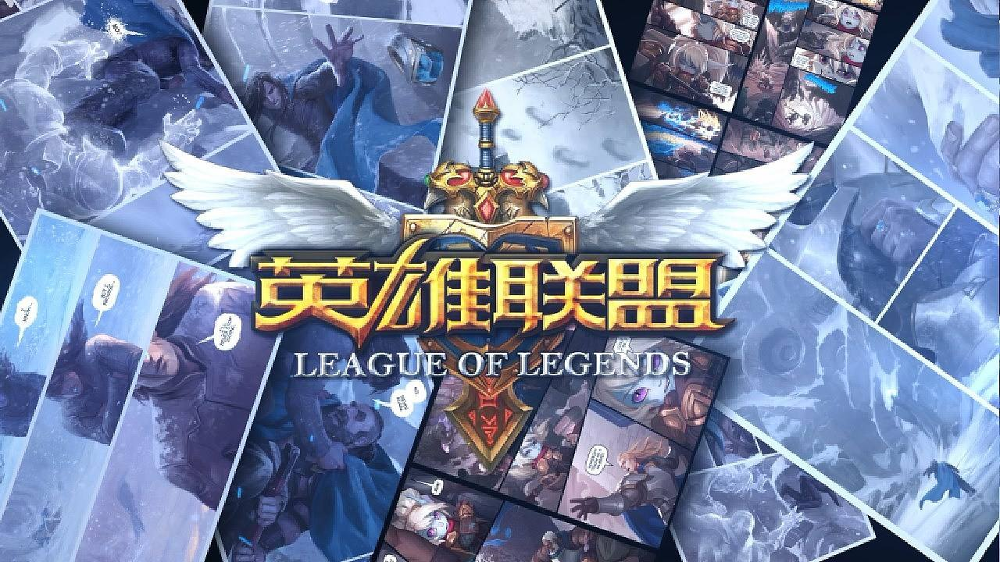
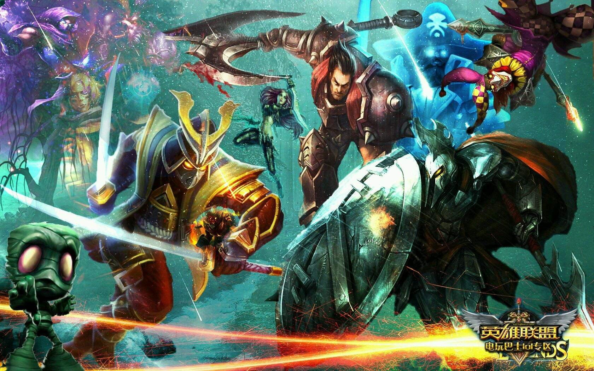
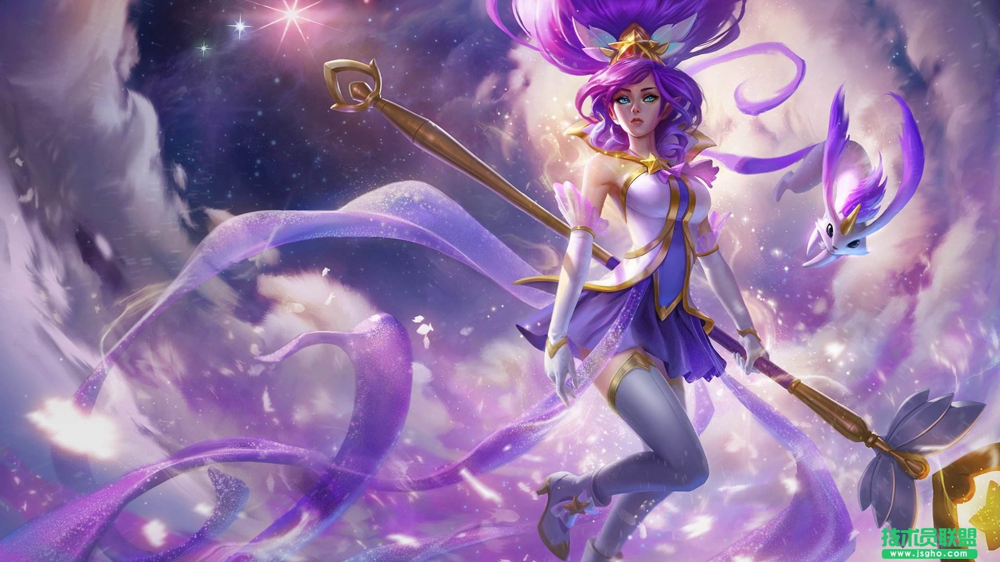

英雄联盟：英雄对战MOBA竞技网游-电子竞技类游戏
致力于推动全球电子竞技的发展
在符文之地，魔法就是一切。
在这里，魔法不只是一种神秘莫测的能量概念。它是实体化的物质，可以被引导、成形、塑造和操作。符文之地的魔法拥有自己的自然法则。源生态魔法随机变化的结果改变了科学法则。
符文之地有数块大陆，不过所有的生命都集中在最大魔法大陆——瓦罗兰。瓦罗兰大陆居于符文之地中心，是符文之地面积最大的大陆。
被祝福的符文之地上有大量源生态魔法能量，而此地居民可以触及其中的能量。符文之地的中心区域集中了数量巨大的源生态魔法能量，这些地方都是水晶枢纽的理想位置。水晶枢纽可以将源生能量塑形为自身实体化的存在。此外，水晶枢纽还可以成为能量车间，为需要魔法能量的建筑供能。水晶枢纽遍布符文之地，但最大的水晶枢纽都坐落在瓦罗兰大陆。
直到二十年前，符文之地才从战乱中解脱。这片大陆上的人民自远古以来就习惯结群而斗，用战争解决纷争。而不论何时，战争的工具始终都是魔法。
军队用法术和符文武装自己，英雄们打造出大部分魔法物品率领部队彼此厮杀。召唤者，瓦罗兰大陆的实际领导者们，他们疯狂使用魔法能量攻击敌人的部队和支持者。他们拥有近乎无限的原始魔法力量使用，从未考虑过无止境的滥用魔法会给这片大陆的环境带来怎么样的灾难。
然而近200年来无止境的魔法滥用让瓦罗兰的人民看到了符文之地的脆弱 现状。最后两次符文之战剧烈影响了瓦罗兰的地质环境，尽管人们试图聚集魔法能量来恢复这灾难性的后果，却毫无作用。剧烈的地震和恐怖的魔法风暴让整个瓦罗兰为之颤抖，对人们来说这份恐惧远超过战争的可怖。人们终于意识到世界已经承受不起符文之战的破坏。为了回应世界上不断恶化的政治和经济危机，瓦罗兰的大法师们——包括许多强大的召唤者——达成共识，所有的冲突必须以可控和系统化的方式来处理。
他们成立了一个叫“英雄联盟”的组织，目的在于监督瓦罗兰的政治纷争得以有序处理。位于战争学院的英雄联盟获得了瓦罗兰政治实体们的陆续授权，这个组织将管理处置所有政治纷争带来的结果，英雄联盟决定所有主要的政治争论都必须通过特别设立在瓦罗兰各地的竞技场来处理。拥有不同政见的召唤者们各自召唤一个英雄，这些英雄们则带领没有心智意识的小兵进行战斗，这些小兵由初阶召唤者通过召唤节点制造。
战争学院是英雄联盟裁决瓦罗兰政治纠纷之地。这里是绝对中立的领土，严禁任何纷争。违反者将面对学院的士兵和魔法。学院坐落于一座巨型水晶枢纽之上，由黑曜石、贵金属和魔法塑形而成。它位于莫格罗恩关隘的北方入口，刚好位于相互敌对的城邦德玛西亚和诺克萨斯之间。
人类城邦诺克萨斯坐落在瓦罗兰大陆远东中心，它在道德准则上和德玛西亚对比大相径庭。这个城市无论在物质上还是精神上都不择手段的追求强大权力，丝毫不顾对别人带来的影响。
人类城邦德玛西亚坐落在瓦罗兰的西部海岸。德玛西亚人民的共同目标是通过善良和正义让所有人都过得更好。他们认为恶毒自私如同疾病，应当从人类灵魂中根除。来到德玛西亚并定居于此的人们，具有和本地居民一样的理想和美德。损人利己的人很快会发现，在这里他们下场是放逐或者更糟。
班德尔城是符文之地最古老的城邦，它的历史比德玛西亚和诺克萨斯还早。班德尔城也是瓦洛兰最与世隔绝的城邦——约德尔人喜欢这样。
艾欧尼亚位于瓦罗兰大陆之外，诺克萨斯东北。虽然该国的主要人口组成是人类，但部分约德尔人和其他世界性种族也将这里视为家园。艾欧尼亚有许多宗教中心和学校。艾欧尼亚法院是全瓦罗兰公认的公平和中立的典范。所以艾欧尼亚审判官是除了英雄联盟审判者之外最受青睐的职位。
弗雷尔卓德坐落于瓦罗兰大陆西北方的永冻苔原。早期因为内部纷争加上地处边疆，导致居住于此的种族不喜欢与外界往来，独然而居。在种种因素与诺克萨斯的推力下，让他们成为了瓦罗兰大陆中，第八个也是最新的一座城邦。
皮尔特沃夫是瓦罗兰北部的和平城邦，致力于推动科学技术的发展。当然在皮尔特沃夫境内也存在有魔法，不过科技得到了更广泛的使用，并成为居民的首选。“魔法是科技引擎的燃料”这是皮尔特沃夫的大众常识。海克斯科技即为皮尔特沃夫的法律准则。
蓝焰岛是一个错误的古称，实际上蓝焰岛是瓦洛兰大陆约德尔城东部海岸线外三个独立岛屿的总称。在第三次符文之战期间，最大的一场战争引发的毁灭性魔法力量将岛屿撕成碎片。一枚附有高度不稳定的魔法超大稀有金属炸弹落在了岛上，引发了爆炸。
《英雄联盟》致力于推动全球电子竞技的发展，除了联动各赛区发展职业联赛、打造电竞体系之外，每年还会举办“季中冠军赛”“全球总决赛”“All Star全明星赛”三大世界级赛事，获得了亿万玩家的喜爱，形成了自己独有的电子竞技文化。
电子竞技类游戏
英雄联盟
电子竞技类游戏